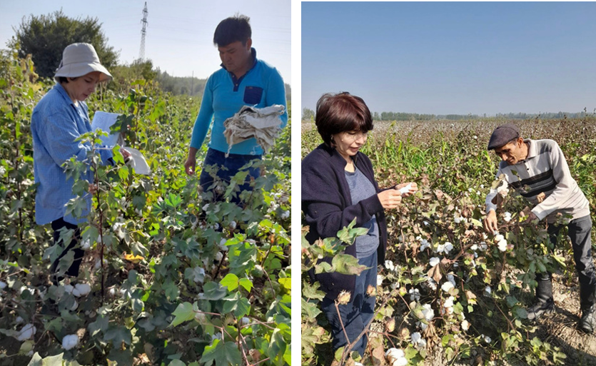

Создание предприятия по производству семян хлопчатника в Узбекистане
О проекте
Проект направлен на организацию полного цикла выращивания, сбора, обработки и упаковки семян хлопчатника, устойчивых к экстремальным климатическим условиям и болезням, для удовлетворения спроса сельского хозяйства Узбекистана.
Организация-грантополучатель
SEEDMASTER LLC
Официальное название
Создание предприятия по производству семян хлопчатника в Узбекистане
Код проекта
BIRD-01/52
Руководитель проекта
Саида Эгамбердиева (СТО, Doctor of Agricultural Sciences)
Проблема и решение
Решаемые проблемы
- Недостаток высококачественного посевного материала, адаптированного к разным климатическим зонам
- Низкая устойчивость существующих сортов семян к заболеваниям и экстремальной погоде
- Отсутствие интегрированной системы "запрос бизнеса — результаты селекции"
Цель проекта
Организация полного цикла выращивания, сбора, обработки и упаковки семян хлопчатника, устойчивых к экстремальным климатическим условиям и болезням, для удовлетворения спроса сельского хозяйства Узбекистана.
Технологическое решение
Производство семян хлопчатника на основе 100-летнего опыта селекционеров НИССАBX. Создание комплекса для выращивания, переработки и упаковки семян. Построение рынка высококачественного сертифицированного посевного материала.
Ключевые особенности:
- Использование 100-летнего опыта селекционеров НИССАBX
- Полный цикл производства: от выращивания до упаковки
- Семена с высокой устойчивостью к климатическим условиям и болезням
- Сертифицированный посевной материал с гарантированным качеством
- Адаптация к различным климатическим зонам Узбекистана
Текущий статус проекта
Интеллектуальная собственность
Вся интеллектуальная собственность зарегистрирована
Ассортимент
Разработана ассортиментная линейка семян
Первые заказы
Получены первые заказы от крупных фермеров
Планы по развитию
Исследования и доработки
Разработка новых сортов семян с улучшенной устойчивостью к экстремальным погодным условиям и заболеваниям.
Коммерциализация
- Привлечение дополнительных инвестиций при масштабировании за рубеж
- Экспорт в соседние страны (Казахстан, Таджикистан)
- Расширение ассортимента и объемов производства
Ожидаемые результаты
Выручка: 1 год: $400,000, 5 год: до $5,000,000. Прибыль за 5 лет: $3,920,000. Значительное повышение качества и устойчивости хлопкового производства в Узбекистане.